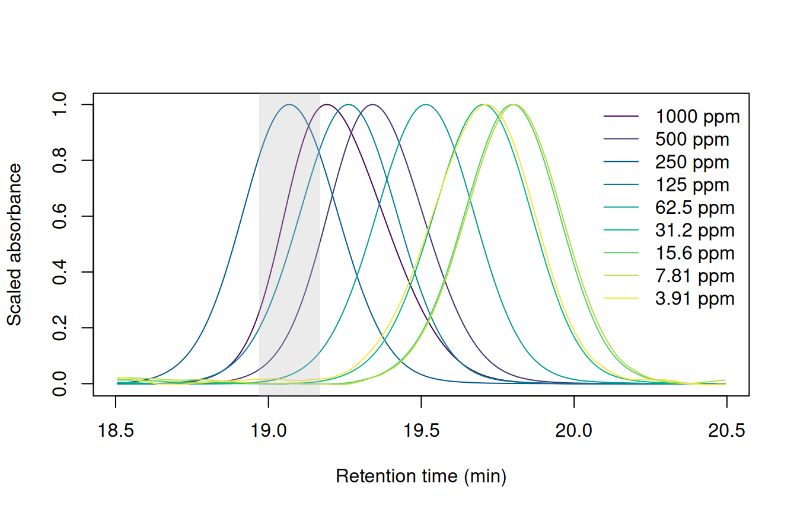
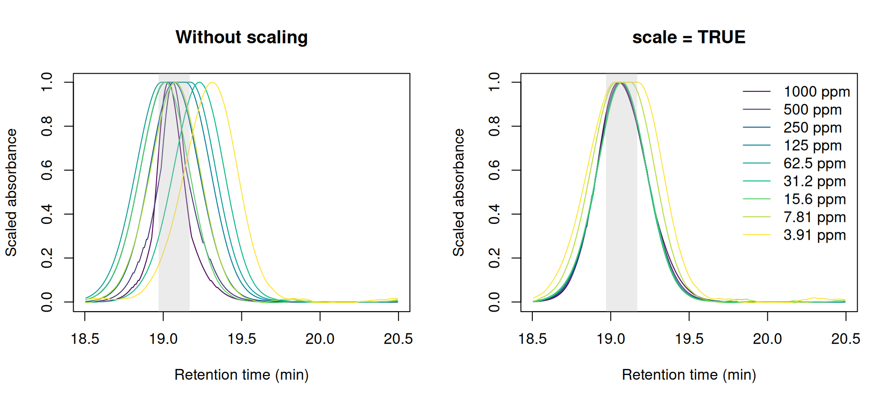
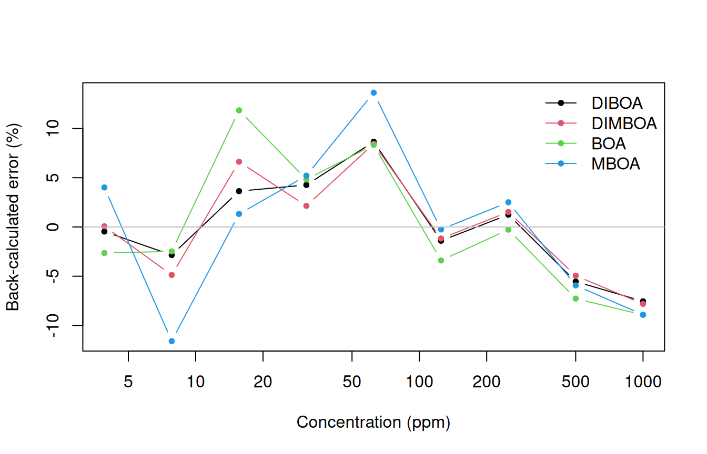
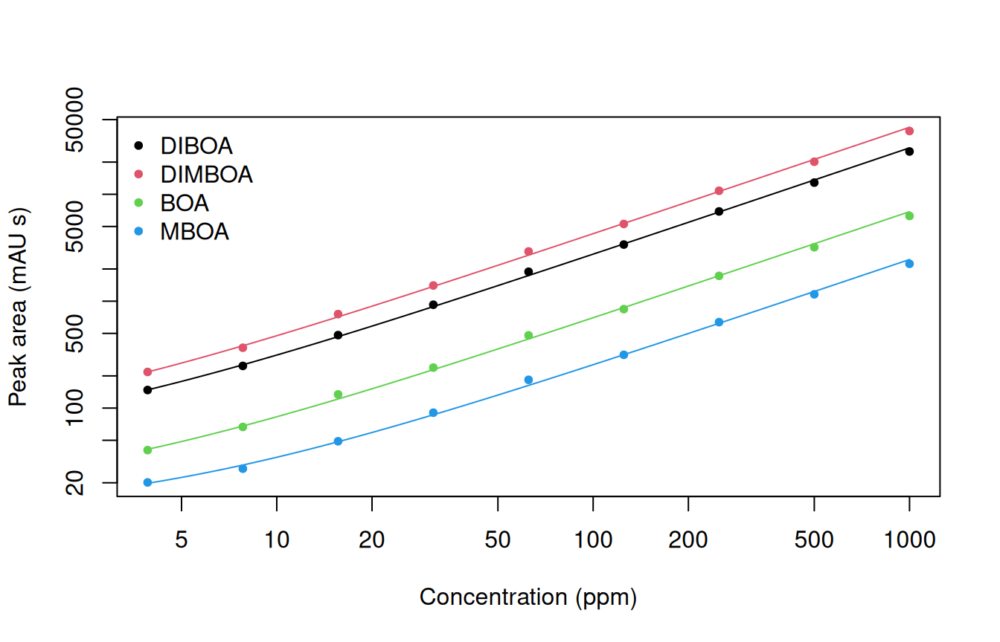

Targeted analysis: calibration curves for four benzoxazinoids
Source:vignettes/articles/targeted-analysis.qmd
Quantifying a known compound requires three steps: finding its peak in every run, integrating it, and converting the area to a concentration using a calibration curve. Targeted analysis integrates only the peaks at known retention times: get_peaks(targets = ...) fits the peaks near the retention times you list, and get_peaktable() returns one named column per target.
This article quantifies four compounds in a dilution series whose retention times drift. It aligns the runs to find the targets, integrates the unaligned runs, fits calibration curves, and compares the areas with those from the instrument’s own software.
Reading the standards
The example is a dilution series of a mixed standard of four benzoxazinoids (DIBOA, DIMBOA, BOA and MBOA), from 1000 to 4 ppm, plus a methanol blank. It ships with chromConverter as ChemStation .D directories, each holding the 254 nm trace and ChemStation’s peak report:
seq_dir <- system.file("extdata", "benzoxazinoid_standards",
package = "chromConverter")
chroms <- chromConverter::read_chroms(seq_dir, format_in = "chemstation_ch",
pattern = "dad1A",
parser = "chromconverter",
progress_bar = FALSE)
names(chroms)
#> [1] "MEOH" "BENZOS_1000PPM" "BENZOS_500PPM" "BENZOS_250PPM"
#> [5] "BENZOS_125PPM" "BENZOS_62,5PPM" "BENZOS_31,25PPM" "BENZOS_16PPM"
#> [9] "BENZOS_8PPM" "BENZOS_4PPM"Shorter names make the tables easier to read, and moving the blank to the end puts the runs in order of concentration. The standards were prepared by serial dilution, so each is half the concentration of the one before; the names round the last three, so ppm holds the exact values:
short_name <- function(x){
x <- sub("BENZOS_(.*)PPM", "\\1 ppm", sub(",", ".", x))
replace(x, x == "MEOH", "blank")
}
names(chroms) <- short_name(names(chroms))
ppm <- setNames(1000 / 2^(0:8), names(chroms)[-1])
chroms <- chroms[c(names(ppm), "blank")]
names(chroms)
#> [1] "1000 ppm" "500 ppm" "250 ppm" "125 ppm" "62.5 ppm" "31.25 ppm"
#> [7] "16 ppm" "8 ppm" "4 ppm" "blank"The runs differ in length by a point, so preprocess() puts them on a common time axis and removes the baseline. There is only one wavelength, so interpolate_cols = FALSE leaves the spectral axis alone:
chroms_pr <- preprocess(chroms, dim1 = seq(0, 59.9, by = 1/150),
interpolate_cols = FALSE, show_progress = FALSE)Retention time drift
With each run scaled to the height of its DIMBOA peak, the peak’s movement over the sequence is easy to see:
Plot the DIMBOA peak in each standard
cols <- hcl.colors(length(ppm), "viridis")
plot_dimboa <- function(chroms, ...){
times <- as.numeric(rownames(chroms[[1]]))
near_dimboa <- times > 18.5 & times < 20.5
dimboa <- sapply(chroms[names(ppm)], function(x){
trace <- x[near_dimboa, 1]
trace / max(trace)
})
matplot(times[near_dimboa], dimboa, type = "l", lty = 1, col = cols,
xlab = "Retention time (min)", ylab = "Scaled absorbance", ...)
rect(19.07 - 0.1, par("usr")[3], 19.07 + 0.1, par("usr")[4],
col = adjustcolor("grey", 0.3), border = NA)
}
plot_dimboa(chroms_pr)
legend("topright", paste(signif(ppm, 3), "ppm"), col = cols, lty = 1,
bty = "n")
get_peaks() searches by default: 0.1 minutes either side of DIMBOA’s retention time in the 250 ppm run.
DIMBOA elutes 0.7 minutes later in the dilute standards than in the 250 ppm run, about twice its peak width, so a narrow window around its 250 ppm retention time would miss it. The targets are at least 1.8 minutes apart, so wide windows would also work here. In a crowded chromatogram, a wide window would catch neighboring peaks, so aligning the runs keeps the windows narrow.
Aligning the standards
The targets are listed at their retention times in the 250 ppm run:
targets <- data.frame(name = c("DIBOA", "DIMBOA", "BOA", "MBOA"),
rt = c(12.54, 19.07, 20.98, 28.23))The correct_rt() function works out how far to shift each part of a run to line it up with the reference. This mapping is called a warp. get_peaks(mod_list = ...) uses the warps to find each target in each run. We can specify time_unit = "s" to report areas in mAU s, the unit ChemStation uses.
# The drift nears the default max_shift of 1 minute. VPdtw's warnings about
# large shifts come only from stretches away from the targets.
warp_default <- suppressWarnings(
correct_rt(chroms_pr, alg = "vpdtw", reference = "250 ppm",
max_shift = 2, what = "models", show_progress = FALSE))
pks_default <- get_peaks(chroms_pr, targets = targets,
mod_list = warp_default, time_unit = "s",
show_progress = FALSE)
knitr::kable(get_peaktable(pks_default)$tab, digits = 0)| DIBOA | DIMBOA | BOA | MBOA | |
|---|---|---|---|---|
| 1000 ppm | 25128 | 39047 | 6264 | 2236 |
| 500 ppm | 12857 | 20155 | 3196 | 1160 |
| 250 ppm | 6910 | 10788 | 1725 | 637 |
| 125 ppm | 3386 | 5278 | 843 | 315 |
| 62.5 ppm | 1885 | 2919 | 479 | 184 |
| 31.25 ppm | 0 | 0 | 239 | 91 |
| 16 ppm | 0 | 757 | 134 | 49 |
| 8 ppm | 0 | 367 | 67 | 0 |
| 4 ppm | 0 | 0 | 0 | 0 |
| blank | 0 | 0 | 0 | 3 |
Targets go missing below 62.5 ppm, and none is found at 4 ppm. VPdtw matches intensities, and the 4 ppm standard is 64 times more dilute than the reference, so its peaks barely register.
scale = TRUE divides each run by its maximum before fitting the warp, so the runs are compared by the shape of their signal:
warp <- suppressWarnings(
correct_rt(chroms_pr, alg = "vpdtw", reference = "250 ppm",
scale = TRUE, max_shift = 2, what = "models",
show_progress = FALSE))
pks <- get_peaks(chroms_pr, targets = targets, mod_list = warp,
time_unit = "s", show_progress = FALSE)
pk_tab <- get_peaktable(pks)
knitr::kable(pk_tab$tab, digits = 0)scale = TRUE.
| DIBOA | DIMBOA | BOA | MBOA | |
|---|---|---|---|---|
| 1000 ppm | 25128 | 39047 | 6264 | 2236 |
| 500 ppm | 12857 | 20155 | 3196 | 1160 |
| 250 ppm | 6910 | 10788 | 1725 | 637 |
| 125 ppm | 3386 | 5278 | 843 | 315 |
| 62.5 ppm | 1885 | 2919 | 479 | 184 |
| 31.25 ppm | 926 | 1403 | 239 | 91 |
| 16 ppm | 481 | 757 | 134 | 49 |
| 8 ppm | 248 | 367 | 67 | 27 |
| 4 ppm | 148 | 218 | 40 | 20 |
| blank | 9 | 7 | 1 | 6 |
Every target is now found in every standard. The blank has no targets, so get_peaks() fitted the tallest bit of noise in each window.
Passing the warps back to correct_rt() through models returns the warped chromatograms. Without scaling, DIMBOA lands outside the grey band at 31.25 and 4 ppm; with scaling, every standard lines up with the reference:
Plot DIMBOA after each alignment
warped_default <- correct_rt(chroms_pr, models = warp_default, alg = "vpdtw",
show_progress = FALSE)
warped <- correct_rt(chroms_pr, models = warp, alg = "vpdtw",
show_progress = FALSE)
par(mfrow = c(1, 2))
plot_dimboa(warped_default, main = "Without scaling")
plot_dimboa(warped, main = "scale = TRUE")
legend("topright", paste(signif(ppm, 3), "ppm"), col = cols, lty = 1,
bty = "n")
Peak integration
The warp only tells get_peaks() where to look; the peaks are fitted on the unaligned chromatograms. Warping stretches and compresses peaks, as in the flat tops of the two most dilute standards in Figure 2, so integrating the warped chromatograms gives different areas:
pks_warped <- get_peaks(warped, targets = targets, time_unit = "s",
show_progress = FALSE)
distortion <- get_peaktable(pks_warped)$tab[names(ppm), ] /
pk_tab$tab[names(ppm), ]
knitr::kable(distortion, digits = 2)| DIBOA | DIMBOA | BOA | MBOA | |
|---|---|---|---|---|
| 1000 ppm | 0.99 | 0.99 | 0.99 | 1.01 |
| 500 ppm | 1.00 | 1.00 | 1.00 | 1.02 |
| 250 ppm | 1.00 | 1.00 | 1.00 | 1.00 |
| 125 ppm | 0.99 | 0.99 | 0.98 | 0.98 |
| 62.5 ppm | 0.97 | 0.98 | 0.96 | 0.93 |
| 31.25 ppm | 0.96 | 0.98 | 0.93 | 0.91 |
| 16 ppm | 1.00 | 1.01 | 0.93 | 0.93 |
| 8 ppm | 1.21 | 1.25 | 1.23 | 1.12 |
| 4 ppm | 1.27 | 1.37 | 1.29 | 1.19 |
The areas from the warped chromatograms are off by up to 37%, most of all in the two most dilute standards. Integrate the unaligned chromatograms, and use the warp only to find the peaks.
Fitting the calibration curves
Each compound’s areas span more than two orders of magnitude, so an unweighted fit would be dominated by the top standards. Weighting each standard by 1 / ppm^2 gives every standard equal weight in relative terms. To check the curves, convert each area back to a concentration and compare it with the nominal one:
fit_curve <- function(area, ppm) lm(area ~ ppm, weights = 1 / ppm^2)
quantify <- function(curve, area) (area - coef(curve)[[1]]) / coef(curve)[[2]]
areas <- pk_tab$tab[names(ppm), ]
curves <- lapply(areas, fit_curve, ppm = ppm)
errors <- 100 * (mapply(quantify, curves, areas) - ppm) / ppm
rownames(errors) <- names(ppm)
knitr::kable(errors, digits = 1)| DIBOA | DIMBOA | BOA | MBOA | |
|---|---|---|---|---|
| 1000 ppm | -7.5 | -7.8 | -8.9 | -8.9 |
| 500 ppm | -5.5 | -4.9 | -7.3 | -5.9 |
| 250 ppm | 1.2 | 1.5 | -0.3 | 2.5 |
| 125 ppm | -1.4 | -1.2 | -3.4 | -0.2 |
| 62.5 ppm | 8.6 | 8.4 | 8.3 | 13.6 |
| 31.25 ppm | 4.3 | 2.1 | 4.8 | 5.2 |
| 16 ppm | 3.6 | 6.6 | 11.8 | 1.3 |
| 8 ppm | -2.8 | -4.9 | -2.5 | -11.6 |
| 4 ppm | -0.5 | 0.1 | -2.6 | 4.0 |
Most standards back-calculate to within 10% of the nominal concentration. Above about 30 ppm, each run’s error is shared by all four compounds: every compound reads low at 1000 ppm and high at 62.5 ppm. Integration errors would differ from one peak to the next, so an error all four compounds share points to the run itself: that standard was more or less concentrated than its label says, or more or less of it was injected. Detector saturation can’t explain the low readings at 1000 ppm, because BOA never exceeds 300 mAU and reads as low as the others.
Plot the errors

Below about 30 ppm the compounds part ways. The smallest peaks are only a few mAU tall, so a few mAU s of baseline error is a large fraction of their area.
On logarithmic axes, the dilute standards stay visible next to the concentrated ones:
Plot the calibration curves
grid <- exp(seq(log(min(ppm)), log(max(ppm)), length.out = 50))
fitted <- sapply(curves, predict, newdata = data.frame(ppm = grid))
matplot(ppm, areas, log = "xy", pch = 20, col = 1:4,
xlab = "Concentration (ppm)", ylab = "Peak area (mAU s)")
matlines(grid, fitted, lty = 1, col = 1:4)
legend("topleft", colnames(areas), col = 1:4, pch = 20, bty = "n")
1 / ppm^2.
Quantifying an “unknown”
quantify() solves a curve for the concentration that gives a sample’s area. This dataset holds no unknowns, so the 31.25 ppm standard stands in for one: fit the curves to the other eight standards, then quantify it and the blank:
unknown <- "31.25 ppm"
standards <- setdiff(names(ppm), unknown)
curves_8 <- lapply(areas[standards, ], fit_curve, ppm = ppm[standards])
samples <- pk_tab$tab[c(unknown, "blank"), ]
concentration <- mapply(quantify, curves_8, samples)
rownames(concentration) <- rownames(samples)
knitr::kable(concentration, digits = 1)| DIBOA | DIMBOA | BOA | MBOA | |
|---|---|---|---|---|
| 31.25 ppm | 32.8 | 32.0 | 33.0 | 33.1 |
| blank | -1.2 | -1.1 | -1.9 | -1.8 |
All four compounds in the 31.25 ppm standard read 2 to 6% high. As in the calibration fit, an error shared by every compound points to the run (a dilution step, evaporation from the vial, or the injection volume) rather than the integration. The blank reads slightly below zero because the curve is extrapolating below the lowest standard. Report such samples as below 4 ppm, not as a number.
Comparing integration results with ChemStation
ChemStation integrated the same runs when they were acquired, and its peak reports ship with the data. Its retention times are not aligned, so each target’s window has to cover the drift, from just before its 250 ppm retention time to 0.8 minutes after. The largest peak in the window is the target:
Match ChemStation’s peaks to the targets
peak_list <- chromConverter::read_peaklist(seq_dir, format_in = "chemstation",
progress_bar = FALSE)
reports <- do.call(rbind, lapply(peak_list, `[[`, "254"))
reports$sample <- short_name(reports$sample)
cs <- lapply(targets$rt, function(target_rt){
in_window <- subset(reports, rt > target_rt - 0.1 & rt < target_rt + 0.8)
in_window <- in_window[order(in_window$area, decreasing = TRUE), ]
in_window[match(names(ppm), in_window$sample), ]
})
cs_areas <- sapply(cs, `[[`, "area")
cs_heights <- sapply(cs, `[[`, "height")
dimnames(cs_areas) <- dimnames(cs_heights) <- list(names(ppm), targets$name)The two programs draw the baseline differently: chromatographR fits it to the whole run, while ChemStation draws a line under each peak (see the FAQ). get_peaks(baseline = "flat") also fits a constant offset under each peak:
pks_flat <- get_peaks(chroms_pr, targets = targets, mod_list = warp,
baseline = "flat", time_unit = "s",
show_progress = FALSE)
areas_flat <- get_peaktable(pks_flat)$tab[names(ppm), ]Two MBOA peaks show the difference: at 8 ppm the two programs differ most, and at 31.25 ppm only the flat baseline differs from ChemStation:
Plot the comparison
examples <- data.frame(sample = c("8 ppm", "31.25 ppm"),
rt = c(28.92, 28.84), ymax = c(1.2, 4))
layout(matrix(c(1, 2, 4, 1, 3, 5), 2, byrow = TRUE), widths = c(1.6, 1, 1))
matplot(cs_heights, areas / cs_areas, log = "x", pch = 16, col = 1:4,
ylim = range(areas / cs_areas, areas_flat / cs_areas),
xlab = "Peak height in ChemStation (mAU)",
ylab = "Area ratio (chromatographR / ChemStation)")
matpoints(cs_heights, areas_flat / cs_areas, pch = 1, col = 1:4)
abline(h = 1, col = "grey")
legend("topright", c(colnames(areas), 'baseline = "none"', 'baseline = "flat"'),
pch = c(rep(15, 4), 16, 1), col = c(1:4, 1, 1), bty = "n", ncol = 2)
for (i in 1:2){
s <- examples$sample[i]
example_ratio <- c(areas[s, "MBOA"], areas_flat[s, "MBOA"]) /
cs_areas[s, "MBOA"]
arrows(cs_heights[s, "MBOA"], example_ratio[1] - 0.01,
y1 = example_ratio[2] + 0.01, length = 0.08, col = "grey20")
text(cs_heights[s, "MBOA"], example_ratio, letters[2 * i + 0:1],
pos = 4, font = 2)
}
mtext("a", side = 3, adj = 0, line = 0.5, font = 2)
for (i in 1:2){
for (j in 1:2){
plot(list(pks, pks_flat)[[j]], idx = examples$sample[i],
targets = examples$rt[i], ylim = c(0, examples$ymax[i]),
main = sprintf('%s, baseline = "%s"', examples$sample[i],
c("none", "flat")[j]),
cex.main = 1, xlab = "Retention time (min)",
ylab = "Absorbance (mAU)")
abline(h = 0, lty = 3)
mtext(letters[2 * i + j - 1], side = 3, adj = 0, line = 0.5, font = 2)
}
}![Five panels. Panel a: ratio of chromatographR's peak area to ChemStation's against ChemStation's peak height, one colour per benzoxazinoid, filled for no local baseline and open for a flat local baseline. Above about 5 mAU the two sets of points coincide, between 0.95 and 1.03. Below 5 mAU the filled points rise to 1.24, while the open points lie between 0.88 and 1.05. Vertical arrows run from the filled to the open point for each MBOA peak shown in panels panels b-e. Panels b-e: the 8 ppm MBOA peak, about 1.1 mAU tall, and the 31.25 ppm MBOA peak, about 3.7 mAU tall, with the fitted peak shaded and a dotted line at zero absorbance. Without a local baseline (b, d) the shaded peak reaches down to zero, below the trace on either side. With a flat local baseline (c, e) the shaded peak sits on the level of the trace on either side.](targeted-analysis_files/figure-html/fig-chemstation-1.png)
Above about 5 mAU, both sets of areas are within about 5% of ChemStation’s, and most are a few percent smaller. Below 5 mAU they diverge. Without a local baseline, areas are up to a quarter larger: the whole-run baseline leaves a little signal under the smallest peaks, and the fit includes it (b, d). The flat baseline sits on the trace on either side (c, e) and ranges from 12% below ChemStation to 5% above, yet ChemStation agrees with it at 8 ppm and with no local baseline at 31.25 ppm. Without peaks of known area, this comparison can’t say which integration is right, only that below about 5 mAU the choice of baseline alone moves the area by up to 21%.
The two most dilute MBOA standards are the hardest to integrate: their peaks are about 1 mAU tall, and the flat baseline shrinks their areas by about a fifth. They still back-calculate to within 12% of nominal, about as close as the other standards, so they can stay in the curve, but concentrations this low are less certain than the fit suggests.
See also
- The
targeted_analysishelp page describes the other route to a table of targets, which this article doesn’t use: matching peaks to a reference sample by spectrum withmatch_peaks(), for targets that retention time alone can’t pick out but whose spectra are distinct from their neighbors’. - chromConverter’s vignette works through the same files: reading the sequence, its metadata and the ChemStation reports.
Session info
sessionInfo()
#> R version 4.6.1 (2026-06-24)
#> Platform: x86_64-pc-linux-gnu
#> Running under: Ubuntu 24.04.5 LTS
#>
#> Matrix products: default
#> BLAS: /usr/lib/x86_64-linux-gnu/openblas-pthread/libblas.so.3
#> LAPACK: /usr/lib/x86_64-linux-gnu/openblas-pthread/libopenblasp-r0.3.26.so; LAPACK version 3.12.0
#>
#> locale:
#> [1] LC_CTYPE=C.UTF-8 LC_NUMERIC=C LC_TIME=C.UTF-8
#> [4] LC_COLLATE=C.UTF-8 LC_MONETARY=C.UTF-8 LC_MESSAGES=C.UTF-8
#> [7] LC_PAPER=C.UTF-8 LC_NAME=C LC_ADDRESS=C
#> [10] LC_TELEPHONE=C LC_MEASUREMENT=C.UTF-8 LC_IDENTIFICATION=C
#>
#> time zone: UTC
#> tzcode source: system (glibc)
#>
#> attached base packages:
#> [1] stats graphics grDevices utils datasets methods base
#>
#> other attached packages:
#> [1] chromatographR_0.9.0
#>
#> loaded via a namespace (and not attached):
#> [1] generics_0.1.4 bitops_1.1-0 xml2_1.6.0
#> [4] fastcluster_1.3.0 stringi_1.8.9 lattice_0.22-9
#> [7] digest_0.6.39 magrittr_2.0.5 caTools_1.18.4
#> [10] chromConverter_0.11.1 evaluate_1.0.5 grid_4.6.1
#> [13] RColorBrewer_1.1-3 dynamicTreeCut_1.63-1 fastmap_1.2.0
#> [16] cellranger_1.1.0 jsonlite_2.0.0 Matrix_1.7-5
#> [19] Formula_1.2-6 purrr_1.2.2 scales_1.4.0
#> [22] RaMS_1.4.3 pbapply_1.7-5 cli_3.6.6
#> [25] rlang_1.3.0 bit64_4.8.6 ptw_1.9-17
#> [28] base64enc_0.1-6 yaml_2.3.12 otel_0.2.0
#> [31] tools_4.6.1 parallel_4.6.1 minpack.lm_1.2-4
#> [34] dplyr_1.2.1 RcppDE_0.1.9 reticulate_1.47.0
#> [37] vctrs_0.7.3 R6_2.6.1 png_0.1-9
#> [40] lifecycle_1.0.5 stringr_1.6.0 fs_2.1.0
#> [43] bit_4.6.0 pkgconfig_2.0.3 pillar_1.11.1
#> [46] data.table_1.18.6.1 glue_1.8.1 VPdtw_2.2.1
#> [49] Rcpp_1.1.2 tidyselect_1.2.1 xfun_0.62
#> [52] tibble_3.3.1 knitr_1.52 farver_2.1.2
#> [55] htmltools_0.5.9 rmarkdown_2.32 compiler_4.6.1
#> [58] readxl_1.6.0